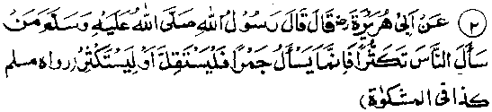

Chapter Six · Section (d): Ahadith on the foregoing subjects (concerning the excellence of Tawakkul)
Hadith 2

Abu Hurairah Radhiallaho anho relates that Rasulullah Sallallaho alaihe wasallam said, "He who begs from people to increase what he possesses, is asking for live coals of Jahannam; so let him ask little or much1'. (Mishkaat)
Note: Hadith one quoted above is about seeking favours from people at the time of need and, therefore, the threat contained therein viz. the seeker being deprived of help from Allah Ta'ala, is not as severe as the one given in this Hadith, which is about a person begging from people without being driven to it by necessity, but simply to increase his own possessions. Such a one is, in reality, gathering for himself as many live coals of Jahannam as he pleases.
Once, Umar Radhiallaho anho said to Rasulullah Sallallaho alaihe wasallam, "Two such and such persons were praising you because you bestowed two (gold) Dinaars upon them." Rasulullah Sallallaho alaihe wasallam said, "As for so and so, I gave him ten to hundred Dinaars but he never made any mention". Then he added, "Some people ask me for something, I give them what they ask and they cany it home, hidden under their arms; though the fact is that they cany nothing but hell-fire." Umar Radhiallaho anho said, "O Rasulullah! Why do you grant them what they desire, when you know that it is like Hell-Fire for them”? Rasulullah Sallallaho alaihe wasallam replied, "What should I do? They do not refrain from asking and Allah Ta'ala does not like me being niggardly towards anyone".
Qabeesah Radhiallaho anho said that once when he was committed to pay an indemnity, he went to Rasulullah Sallallaho alaihe wasallam to seek his help in this matter, he said, "Wait till I receive the Sadaqah from somewhere and I shall help you”. Rasulullah Sallallaho alaihe wasallam then said, "Asking financial help from people is permissible only to these three (classes of) persons: a man who has become a guarantor for a payment; his seeking help from people is permissible only to the extent of the amount involved. Secondly, a man who loses his possessions in an accident or mishap; he may ask from people what will provide him a reasonable subsistence. Thirdly, a man who has gone without food for several days and three members of his own tribe confirm this fact; he may seek help till he gets what will support life. To any person, other than these three classes, begging is forbidden, and if one does so he is consuming something which is forbidden (Haraam)".
It has been related in another Hadith that: Begging is not permissible to two persons: a well-to-do person or one who is in good health and can earn his living; it is permissible only to one who finds himself in humiliating poverty or is involved in severe debt. And, if anyone begs in order to increase thereby his own possessions, his face will appear lacerated on the Day of Resurrection and he shall be devouring Hell-fire; so let him beg for little or beg for more.
Another Hadith has it to the effect that: Acts of begging will cause facial lacerations, on the Day of Resurrection, which will disfigure his face. So, let him who so wishes preserve his good looks or get his face disfigured. Exempted from the above punishments is the person who seeks favour from a ruler as a share out of the Bait-ul-Maal, provided he can rightfully claim it or is driven to begging by sheer necessity.
Still another Hadith says: "When a man is always begging from people, he will appear on the Day of Resurrection with no flesh on his face". Mas‘ud bin ‘Amr Radhiallaho anho relates that, once, the bier of a person was brought to Rasulullah Sallallaho alaihe wasallam for funeral prayers. He asked, "What property did he leave behind?" People said, "Two or three Dinaars (gold coins)". Rasulullah Sallallaho alaihe wasallam said, "Those are two or three brandings of Hell-fire". The narrator of the Hadith says, I asked about it from Abdullah Ibne Qaasim Radhiallaho anho, the bondsman of Abu Bakr Radhiallaho anho, who said, ‘The person used to beg money from people, thereby to increase his wealth’.
Many such incidents have been related in the collections of Ahadith, in which Rasulullah Sallallaho alaihe wasallam threatened-with brandings of Hell-fire and other severe punishments of the kind-those who died leaving behind very small amounts. The Ulama say that these punishments are meant for such people who, although they possess money, tell lies, pretending to be needy, and beg from people and insist on being treated like the poor people.
Imaam Ghazaali Rahmatullah alaihe writes: "A good many Traditions (Ahadith) prohibit asking favours and begging from people, and threaten the beggars with severest punishments in the Akhirah. Some other Traditions, however, refer to the permissibility of seeking monetary help from people under certain circumstances. Obviously, begging in itself, is not permissible for a believer, it becomes permissible only for a person who is driven to it by necessity or faces a pressing demand. In all other circumstances, begging is forbidden. The reasons for its being unlawful are that it involves three things, all of which are unlawful in themselves. First, it involves a tacit complaint against Allah Ta'ala Himself, Who is not, as it were, showing due favour to the person, thus making it necessary for him to turn to others for help. For example, if a slave begs money from people, it will be taken as if his master is hard on him. This state of affairs demands that begging should not be allowed, except when absolutely necessary, just as it is permissible to eat even carrion at the time of utter necessity. Secondly, begging involves humiliating oneself before someone other than Allah Ta'ala. It is below the dignity of a Mo’min to humiliate himself before any person other than Allah Ta'ala. In fact showing ones helplessness and humility to Allah Ta'ala is highly desirable and is blissful, as is abasing oneself before the Loved One. Thirdly, begging often causes vexation to the person from whom a favour is requested. In most cases, the person does not grant a favour, of his own sweet accord, but he does so because he 'feels ashamed (of saying ‘No’ to anyone asking a favour). Now, if a person gives something to a person, to avoid being ashamed or for the sake of show, the thing becomes unlawful (Haraam) for the receiver and, even if he refuses, to help, very often, the person feels remorseful afterwards over, his seeming niggardliness towards the beggar. So in both cases, there is likelihood of the beggar being a nuisance to the one from whom he begs a favour, and this is not desirable, unless one is driven to it by sheer necessity. Now that the reasons for unlaw-fulness of begging have been brought home to us, it will be easy to see why Rasulullah Sallallaho alaihe wasallam has indicated dire consequences for those who beg favours from people.
It is said that Rasulullah Sallallaho alaihe wasallam once remarked, "Whosoever begs a favour from us, we shall grant him what he desires. Why should we refuse him the thing he wants? It is his responsibility to make sure whether asking a favour is permissible for him or not And he who remains contented and does not ask favours (or, according to an alternative reading, asks Allah Ta'ala to make him independent of people), Allah Ta'ala grants him sufficiency and makes him independent of people. And the one who does not ask us favours is dearer to us than the one who does so". Rasulullah Sallallaho alaihe wasallam says in another Hadith: "Try to remain contented and abstain from asking favours; the less you ask from people, the better”.
Once ‘Umar Radhiallaho anho came upon a beggar who was begging from people, after Maghrib (evening) prayers. He told someone to give him some food. The orders were instantly carried out and he was served a meal. After a short while, when ‘Umar Radhiallaho anho again heard him begging, he demanded an ex-, planation from the person who had been told to give him food, who explained that he had served him a meal.'Umar Radhiallaho anho then saw that the beggar had hung a bag under his arm, which contained a lot of bread. He said to him, "You are not a beggar; you are a dealer in bread", meaning that he was not a needy person but he was begging from people in order to collect bread and sell it in the market. Saying this, Umar Radhiallaho anho snatched the bag from him and put the bread before the camels which had been given by people as ‘Sadaqah’ to the Bait-ul-Maal. He then struck the beggar with a whip and said, "Never do this again".
Commenting on the incident, Imaam Ghazaali Rahmatullah alaihe writes:
If begging had not been an unlawful (Haraam) act, Umar Radhiallaho anho would never have struck the beggar with a whip, nor would he have snatched his bread. Some people have taken exception to what Umar Radhiallah anho did to the beggar. They contend that, though whipping can be justified as a lawful admonition as a corrective measure, taking his property (bread) was an act of injustice and wrong-doing as the Shariah (Islamic Law) disallows taking the property of another person.
But this objection is based on ignorance of certain facts. For, who can match Umar Radhiallaho anho in the understanding of Islamic Law (Shariah)? Can we imagine that a man of his position and understanding was unaware of the fact that the Shariah disallows taking of other’s lawful property? Or, can we imagine that, notwithstanding his awareness of the Islamic Law regarding such matters, Umar Radhiallaho anho could not contain his anger at the sight of the unlawful act of begging and he snatched the bread in a fit of rage? Or, should we presume that he willfully adopted an unlawful measure as an expedient to prevent this man from begging in future? In that case, the act of snatching bread was not justified.
The truth is that the beggar was begging without his being needy, while people gave him bread believing him to be a needy person. Therefore, the bread was not his rightful possession, because it had been acquired through deceiving others. Now as it was difficult to locate the lawful owners of this property, it had to be treated as ‘Luqtah’ (i.e. things whose owners are not traceable): such -things are used for the welfare of the deserving sections of the community (Ummah). Umar Radhiallaho anho, therefore, fed it to the camels received in the Bait-ul-Maal as Sadaqah. The beggar was a sinner as, under false pretences, he extorted Sadaqah from the people. If they had known the facts, they would never have given him Sadaqah.
Now that it has been established that asking favours from people is permissible only in a state of real necessity, it should be understood that there are four gradations of necessity; the first stage is that of dire necessity; the second, that which is a hard necessity but is not as acute as the first one. The third stage is the common state of neediness and the fourth is not being needy at all.
As for the first stage-that of dire necessity, it is being in a state in which one fears death from hunger or from a fatal disease; or being in a state'in which one has no clothes to cover one’s body. In such circumstances, begging is permissible provided that (a) it is otherwise correct to use the thing asked for, (b) the person whose favour is requested should grant it willingly; O ' the one who is asking a favour should be incapable of earning a living. For, he who begs from people, in spite of his having enough strength to earn a competence, is a worthless person. However, it is permissible for a person engaged in acquiring religious knowledge to ask favours from people, with a 'view to devoting all his time to the pursuit of knowledge. In the fourth stage, (which is the other extreme), it is unlawful (Haraam) for a person to ask for something which he already possesses; that is to say, if a person possesses cloth sufficient KT his present need, it is unlawful for him to ask for cloth from other people.
The two stages in between these two extremes are, (ii) the state bordering on dire necessity but not as acute as the first stage and,
(iii) the state of less acute necessity. In the second stage, the state bordering on necessity, begging is allowable with certain reservations but, in this stage also, it is better not to beg from people. The instances of this condition are: (1) a person suffering from a disease that is not a fatal one, and (2) a person possessing clothes but not having sufficient warm clothes to protect himself against cold weather. If such a person begs favours from people, he will not be considered to have committed an unlawful (Haraam) or an uncommendable (Makrooh) act. He must, however, state the true nature of his need to the person of whom he is asking a favour. For instance, while asking for doth, he should say, ‘I have got clothes but they are not sufficient to keep me warm in winter. He should not pretend to be in greater need than he actually is.
The third stage is that of necessity of a lower degree. The instances of this condition are: (1) a person possessing enough money to buy plain bread but not enough to buy him curry or soup, or (2) a person having worn-out clothes wanting to buy a new shirt, for use when going outdoors, so that the worn-out clothes should not betray his state of neediness. Asking favours from people is also allowable for such a one, but uncommendable (Makrooh), provided that he dearly states the degree of his necessity to the person of whom he is asking a favour, provided further that, in asking a favour from a person, he should avoid the three unlawful things described above viz. (1) There should be no tacit complaint against Allah Ta'ala implied in the manner of asking a favour (2) He should not humiliate himself before people while asking a favour, and (3) he should not be a source of trouble to the person whose favour he is requesting. A question arises: how can one avoid these three situations? My answer is that one can avoid complaining against Allah Ta'ala if, at the time of asking a favour from people, he expresses his gratitude towards Allah Ta'ala and also states that he is not pressed by any want. That means he should not ask for things like beggars. For example, he should say, I do not need it in particular. I am grateful to Allah Ta'ala for granting me what suffices for my needs. But my heart craves for fine clothes,etc." And to avoid humiliating oneself before others, one should place one’s needs only before one’s parents, brothers or intimate friends who, he is sure, possess such noble feelings for him that asking favours from them will not degrade him in their eyes. Another way of avoiding humiliation is asking a favour of a person who is large-hearted and gives away in Sadaqah profusely and feels happy when approached for favours. In order to avoid embarrassment to people, one should not ask for anything in particular, but express his wish for help in general terms or describe it in such a manner that the person should find it easy to decline his request if he so desires.
It should be borne in mind that the Ulama are unanimously agreed on the unlawfulness of receiving a thing from a person who is giving it against his own will or just to avoid embarrassment or simply because it is begged of him with importunity. Extorting money from people, through begging persistently, is like robbing them by force. Mental torture through censure and slander is also similar. However, he who is forced by necessity may accept a thing given even without the giver’s own accord. But the true facts in each case are known to Allah Ta’ala, Who alone can judge whether a person is really in a state of dire necessity. There is however no harm in asking favours of such friends who, one feels, will be happy if one asks them for help. (Condensed from Ihya-ul-Uloom)
Allama Zubedi Rahmatullah alaihe says: "All these warnings against seeking favours are meant for a person who asks for himself and not for one who asks for the sake of someone else; the latter is motivated by a desire to help others. Similarly, he who seeks the help of his own relatives and friends is not in this category, because they would feel happy when a relative or a friend asks for help". (Ithaaf)
(The author adds:) However, this is only true of such relatives who are really pleased to grant such wishes. Otherwise, causing vexation to one’s relations is strictly forbidden. It is a fact that the relations who are of generous disposition, feel happy to grant the wishes of their relatives. I say this, on the authority of my own experience, and many incidents testify to the truth of this statement.
One of my father’s aunts, who is still alive, used to give me two Paisas as a gift (to spend) whenever she came to visit us in Kandhlah. It had been her routine since my childhood. Later, when I grew up to be a family man, and she also started giving two Paisas each to my children, I insisted that my share should be raised to four Paisas. I said that I would not be treated at par with my children, to which She agreed. I shall ever remember the loving pleasure with which she used to grant my demand; I still fed happy with the joy it gave her. Sometimes, when I saw that she had nothing with her to oblige me, I used to present to her some money just to enable her to give me my four Paisas. I did this because the joy of giving made her forgetful of the fact that she was just returning me what I had given her myself.
Similarly,- Maulana Shamsul Hasan Rahmatullah alaihe, my father’s maternal uncle, used to give me one Rupee as a gift whenever he visited us, in Kandhlah. When I grew up to be a family man, he transferred this favour to my children. I insisted that my gift should not be discontinued saying, "It is between you and my children whether you give them anything or not, but I must get my share!" I shall ever remember the feeling of joy with which he used to meet my demand. He would laugh heartily and repeat my words, ‘My gift-money should not be stopped’, and I said, "It never would". Whenever I remember the conversation, I pray to Allah Ta'ala to grant him forgiveness and to bestow on him such bountiful rewards as are worthy of His Glory. On many other occasions, I experienced similar treatment from other relatives. I have mentioned this because, nowadays, family bonds are becoming weaker and it may seem unimaginable these days that a relative should feel happy over a demand for help, made by a near one.
As for the second remark of Allama Zubedi Rahmatullah alaihe about the permissibility of asking favours from people for helping others, it is self-evident and the various Ahadith (given in Chapter one of this book), on the subject of helping and favouring others, serve as valid arguments in favour of this observation. Likewise it is imperative for a student to devote himself to religious studies, even at the expense of humiliation in seeking help from others.
Mulla Ali Qari Rahmatullah alaihe writes: For anyone who has the capacity to earn his living, but does not do so for the sake of devoting his entire time to the acquisition of religious knowledge, it is permissible to receive Zakaat as well as voluntary Sadaqaat from people. But receiving Zakaat is not allowable for one who does not earn his living, notwithstanding his capacity for work, owing to his devotion to Nafi and other prayers, although he can ask help from people out of voluntary Sadaqaat, this last act also being undesirable (Makrooh) in his case. And, if there are some people who live together, engaged in practices for seif purification, it is desirable that they should depute someone to arrange for their food and clothing. (Mirqaat)
Pursuit of religious knowledge, be it related to external practices or to spiritual purification, is of paramount importance and those who are engaged in it should not take up other occupations. Nor should they take up in any part-time job, for fear of reproach and censure by the ignorant and foolish people. For, it amounts to wasting their invaluable treasure for fear of being reproached by the ignorant who have ever been finding fault with the Divines and even Rasuls of Allah Ta'ala.
Nowadays many people are of the view that religious scholars should also learn a trade for earning their daily bread. This notion is gaining ground and quite a few Ulama, disgruntled at the reproaches by men of the world, have come to regard it as a necessity. Some religious institutions have launched programmes for training the students in various technical skills. The truth is that this practice is detrimental to the cause of knowledge. Those who favour this practice, present (in support of their views) instances from the lives of the great Divines of the past who, in order to earn their living, used to do business, etc., notwithstanding their devotion to the cause of knowledge and their great services for the cause of Deen (Islam). It is truly the best way to serve the cause of Deen if one can, with the help of Allah Ta'ala, afford to adopt this course. But with weak minds and bodies in the troubled times of today, we cannot do both things at a time. Besides, our greed and love of the world will not allow us to devote sufficient time to the pursuit of knowledge and the cause of Deen for the pleasure of Allah Ta'ala, when we find we have the means to increase our earnings. I have seen many cases in which both the pursuits were started simultaneously but, before long, the wish to earn more money overpowered the pursuit of knowledge.
Explaining the ten guidelines for students, Imaam Ghazali Rahmatullah alaihe writes: The fourth rule is that the student should spend minimum time in worldly pursuits, leave his family and go farther away from his home town, because numerous social requirements make demands on one’s time and distract one from the acquisition of knowledge. Allah Ta'ala has not assigned two hearts to any man (so that he' should engage one heart in academic pursuits and the other in earning money). The reference here is to an Ayat from the Holy Qur’an:
‘Allah Ta'ala has not assigned two hearts to any man in his breast’. (al-Ahzab: 4) '
If you busy your mind in various pursuits of the world, you cannot get at the truths of knowledge. That is why they say that something of knowledge is granted only to the one who devotes himself whole-heartedly to the acquisition of learning. As for the person who is scatter-brained, his mind is like a water-channel filled with a leaking bucket, which does not water the fields property because of the leakage of water. (Ihyaa) ’
It is also important that a student should be really, devoted to learning and least concerned about his meals or collecting alms which are, in reality, the dross of people’s earnings.
After recounting what occurs in the Ahadith regarding the punishments meant for the wicked Ulama, Imaam Ghazali Rahmatullah alaihe writes: It is evident from the above that, generally speaking, the Ulama who are enamoured of this world are the worst and the meanest among men and that, in the Akhirah, their punishment will be for more severe than that of the ignorant people. Successful indeed are those Ulama who always keep the Hereafter in view! And there are certain distinguishing signs of such true Ulama, the first of those bring that such an Aalim does not want to acquire worldly wealth through his learning. Even the lowest in rank among the Ulama are fully aware that this material world is contemptible, mean, polluting and short-lived and that the life Hereafter is everlasting and glorious beyond imagination, the bounties whereof are absolutely pure. Besides, a true ‘Aalim fully understands that this world and the world Hereafter are like two wives married to one and the same husband-when one is pleased, the other is naturally displeased. There is also a Hadith to the same effect He who loves his present life does damage to his Akhirah and he who loves his Hereafter does damage to his present life; so prefer what is lasting to what is short-lived. The present life and the Akhirah are, so to speak, like two scales of a balance—when one goes down, the other goes up automatically. And he who does not understand that the material world has low value is not of a sane mind How can such a one be a scholar of Deen.
Hasan Basri Rahmatullah alaihe says, "The punishment of the Ulama is the death of their souls; and the death of the soul consists in one seeking worldly gains in lieu of acts of virtue, that is to say, serving the cause of Deen (Islam) with a view to acquiring worldly wealth, honour, fame or status in life." Yahya bin Mu‘aaz Rahmatullah alaihe says that the value of knowledge and learning is lost when one employs it for earning worldly benefits. Saeed Ibne Musayyab Rahmatullah alaihe says that when you find an Aalim knocking at the doors of the rich people, he must be dishonest Umar Radhiallaho anho says. When you find an Aalim in love with worldly wealth, he cannot be blameless in religious matters, for everybody occupies himself with things which are dear to him. (Condensed from Ihyaa)
It is, therefore, important that the Ulama should always be on their guard lest the love of the world, which is the root-cause of all evils, should imperceptibly enter their minds and take root therein. When one develops a disregard-rather a dislike—for the material world and gets it firmly rooted in one’s mind, there is no harm in asking favours from people or receiving Zakaat and Sadaqaat (charities). It is rather the responsibility of the charitable persons that, while paying Zakaat, etc., they should give preference to the students and scholars devoted to religious knowledge. (We have already discussed this point in the Chapter on the manner of paying Zakaat, in Chapter five, part one of this book).
I pray to Allah Ta'ala to protect me from being enamoured of this world. For, love of the world is a disease of the soul that grows gradually and imperceptibly and it does not consist in greediness alone, but also includes love for status and popularity. In the latter form, its encroachment on the soul is more rapid; especially in religious environments where the desire for worldly recognition and status is far stronger than the lust for wealth.